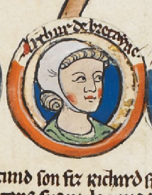

aRTHUR I of bRITTANY
Count of Brittany
(1187 AD – presumably 1203)
Heir to the Throne of England
Proclaimed King of Brittany

Heir to King Richard I "The Lionheart"
Arthur was the postumous son, and only heir, of Count Geoffrey II of Brittany, 4th
Earl of Richmond, who was son of King Henry II, and King Richard's younger brother.
Thus, after his father's death, Arthur was next in line to the Throne of England after Richard, as
this latter had no descendance.
Arthur was therefore recognized as heir presumptive to the Throne of
England by King Richard "the Lionheart" himself in 1190, when he was only 3 years old 1Reference: Encyclopaedia Britannica, Arthur I.
The fixed background image in this page is the 6th
membrane of the digitalized manuscript2Reference: British Library, digitalized manuscript Royal
MS 14 B VI, f.6
of a roll chronicle dated c.1300-c.1340 containing the genealogy of the Kings of England
from the Heptarchy to Edward I, kept in the British Library.

Genealogical roll of the kings of England, f.6r - dated 1300-1340
British Library - Manuscript Royal MS 14 B VI 3Reference: British Library, digitalized full manuscript Royal MS 14 B VI(click on image to go to digitalized manuscript)

(1157 - 1199)
Betrothed to the Princess of France
In 1196, Arthur's mother Constance Duchess of Brittany had the young Arthur proclaimed Duke of
Brittany and her co-ruler as a child of nine years. The same year, Richard I "the Lionheart"
summoned Arthur, as well as his mother Constance, to Normandy. But Ranulf de Blondeville, 6th Earl
of Chester, stepfather of Arthur, abducted them.
Richard marched from Normandy to Brittany to rescue Arthur, who was secretly carried to France to be
brought up with Prince Louis 4Reference:
Everard, J. (2000). Genealogy of the dukes of Brittany, 1066–1203. In Brittany and the
Angevins: Province and Empire 1158–1203 (Cambridge Studies in Medieval Life and Thought:
Fourth Series, p. Xv). Cambridge: Cambridge University Press.
doi:10.1017/CBO9780511496486.002 - King Phillip's
son, and future King of France as Louis VIII.
Same year after the abduction, Artur was betrothed by his mother to the King of France's daughter
Marie, and was since then reared in Phillip's household.
This eventually caused King Richard to disinherit Arthur in favour
of John5Reference: Encyclopaedia Britannica, Arthur I, the
youngest of Richard's brothers, also known as John Lackland for not having inherited lands from
King Henry II.

"Arthur of Brittany doing homage to Philip Augustus"
Les Grandes Chroniques de France manuscript, f. 361v - dated 1332-1350 (Philip Augustus, book 2, 18)
British Library - Manuscript Royal MS 16 G VI (click on image to go to digitalized manuscript)
Death of King Richard I of England
In 1199, King Richard "the Lionheart" died of gangrene aged 42. His vast French territories, with the exception of Rouen, initially rejected John Lackland as a successor, preferring his nephew Arthur6Wikipedia Reference: Jones, Dan (2014). The Plantagenets: The Warrior Kings and Queens Who Made England. Penguin Books. ISBN 978-0-1431-2492-4. .
"... Arthus li Rois de bretaigne..." (Arthur King of Brittany)
Les Grandes Chroniques de France manuscript, f. 361v (lines 10-11) - dated 1332-1350 (Philip Augustus, book 2, 18)
British Library - Manuscript Royal MS 16 G VI (click on image to go to digitalized manuscript)
A rthur fights John Lackland
WHATEVER WHATEVER AH WHATEVER WHATEVER AH AH WHATEVER WHATEVER AH AH WHATEVER WHATEVER AH AH WHATEVER WHATEVER AH AH WHATEVER WHATEVER AH AH WHATEVER WHATEVER AH AH WHATEVER WHATEVER AH AH WHATEVER WHATEVER AH AH WHATEVER WHATEVER AH AH WHATEVER WHATEVER AH AH WHATEVER WHATEVER AH AH WHATEVER WHATEVER AH AH WHATEVER WHATEVER AH AH WHATEVER WHATEVER AH AH WHATEVER WHATEVER AH AH WHATEVER WHATEVER AH